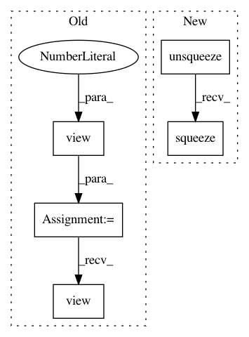

60a342edc8b501802135df44869353cc8604d838,gpytorch/kernels/rbf_kernel.py,RBFKernel,forward,#RBFKernel#Any#Any#,13
Before Change
x1_squared = torch.bmm(x1.view(n, 1, d), x1.view(n, d, 1))
x1_squared = x1_squared.view(n, 1).expand(n, m)
x2_squared = torch.bmm(x2.view(m, 1, d), x2.view(m, d, 1))
x2_squared = x2_squared.view(1, m).expand(n, m)
res.sub_(x1_squared).sub_(x2_squared) // res = -(x - z)^2
res = res / (self.log_lengthscale.exp() + self.eps) // res = -(x - z)^2 / lengthscale
After Change
def forward(self, x1, x2):
res = 2 * x1.matmul(x2.transpose(-1, -2))
x1_squared = torch.matmul(x1.unsqueeze(-2), x1.unsqueeze(-1)).squeeze(-1)
x2_squared = torch.matmul(x2.unsqueeze(-2), x2.unsqueeze(-1)).squeeze(-1).transpose(-1, -2)
res.sub_(x1_squared).sub_(x2_squared) // res = -(x - z)^2
res = res / (self.log_lengthscale.exp() + self.eps) // res = -(x - z)^2 / lengthscale
In pattern: SUPERPATTERN
Frequency: 3
Non-data size: 5
Instances
Project Name: cornellius-gp/gpytorch
Commit Name: 60a342edc8b501802135df44869353cc8604d838
Time: 2018-01-11
Author: gpleiss@gmail.com
File Name: gpytorch/kernels/rbf_kernel.py
Class Name: RBFKernel
Method Name: forward
Project Name: maciejkula/spotlight
Commit Name: 70e4d7fe60a9658bb27b9f5fb67592a1222b2ec3
Time: 2017-07-06
Author: maciej.kula@gmail.com
File Name: spotlight/sequence/representations.py
Class Name: CNNNet
Method Name: user_representation
Project Name: BindsNET/bindsnet
Commit Name: e2edc09327f8ba14b4bfa0ac2b0dc84ee4e7e085
Time: 2018-11-06
Author: djsaunde@umass.edu
File Name: bindsnet/network/topology.py
Class Name: SparseConnection
Method Name: compute